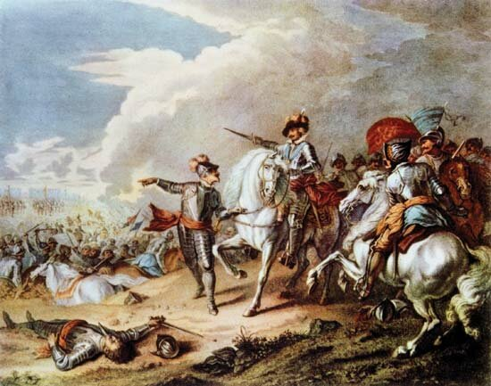
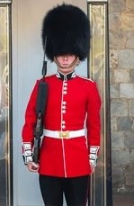

A História da Inglaterra resume-se em uma longa trajetória de invasões celtas, romanas e anglo-saxãs que foi unificada em 1066 pelos normandos, evoluindo séculos depois de uma monarquia absolutista para o primeiro modelo parlamentarista do mundo com a Revolução Gloriosa de 1688. Essa estabilidade política abriu caminho para o pioneirismo na Revolução Industrial e a criação do vasto Império Britânico, que dominou a geopolítica mundial até ser transformado pelo desgaste das duas Guerras Mundiais no século XX.

O verdadeiro nome do Big Ben:"Big Ben" é, na verdade, o apelido do enorme sino de 13 toneladas localizado dentro da torre. O relógio e a estrutura foram rebatizados como Elizabeth Tower em homenagem aos 60 anos de reinado da Rainha Elizabeth II.
Língua oficial no passado: Embora seja o berço do idioma, o francês foi a língua oficial da corte inglesa por cerca de anos (entre 1066 e 1362) após a conquista normanda.
Políticos sem armas: A maioria dos policiais ingleses não carrega armas de fogo em serviço de rotina.
A menor guerra: A Inglaterra esteve envolvida na Guerra Anglo-Zanzibari em 1896, que durou míseros 38 minutos, sendo considerada a guerra mais curta da história militar.
